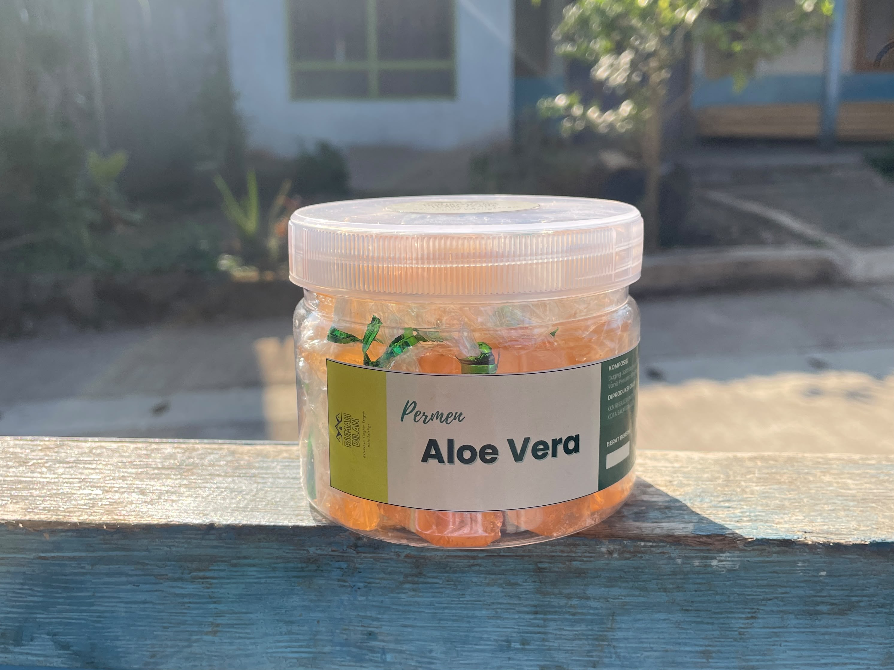

Manis. Kenyal.
Menyegarkan.
Bukan sekadar permen biasa! Nikmati lezatnya olahan daging lidah buaya asli khas Kelurahan Tingkir Tengah, Kota Salatiga yang kaya manfaat.
Lidah Buaya Pilihan
Menggunakan daging lidah buaya segar pilihan dengan komposisi gula halus dan gelatin kualitas terbaik.
Produk Komunitas
Dikembangkan penuh dedikasi oleh KKN Reguler UNDIP Tim II bersama warga Tingkir Tengah.
Lebih dari Sekadar Camilan!
Kenapa tubuhmu akan berterima kasih setelah ngemil permen ini?
Bye-bye Panas Dalam
Lidah buaya punya cooling effect alami. Sensasi segarnya ampuh meredakan panas dalam.
Tameng Imun
Kandungan antioksidan serta Vitamin B, C, dan E bantu tubuhmu lawan radikal bebas.
Pencernaan Lancar
Enzim pengurai alami dalam daging lidah buaya siap jaga sistem pencernaanmu.
Ramah di Mulut
Sifat antibakteri alaminya turut membantu melawan kuman di mulut.

Chewvera
Rasakan perpaduan manisnya gula, aroma vanili, dan kesegaran lidah buaya asli dalam satu gigitan kenyal.
Informasi Produk:
- Komposisi: Daging Lidah buaya, Gula halus, Gelatin, Asam Sitrat.
- Harga Promo: Rp19.000